Group 8
Shangfang Mountain Terrain Path Planning Decision-Making System
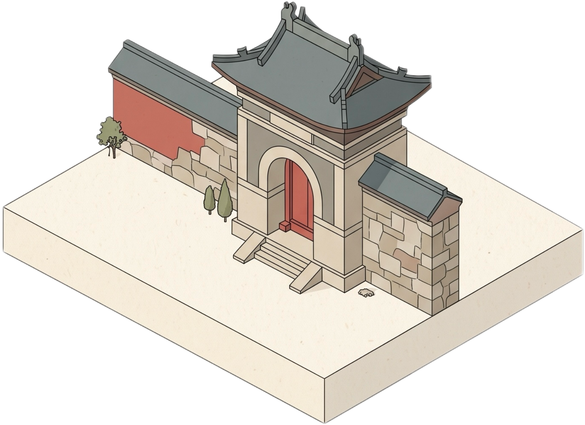


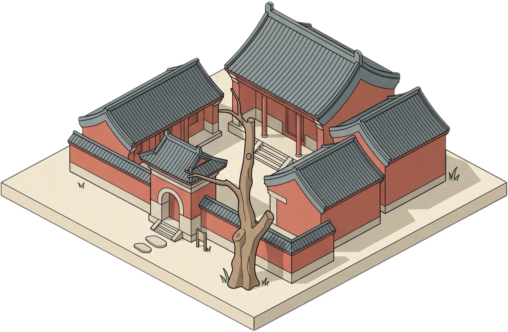


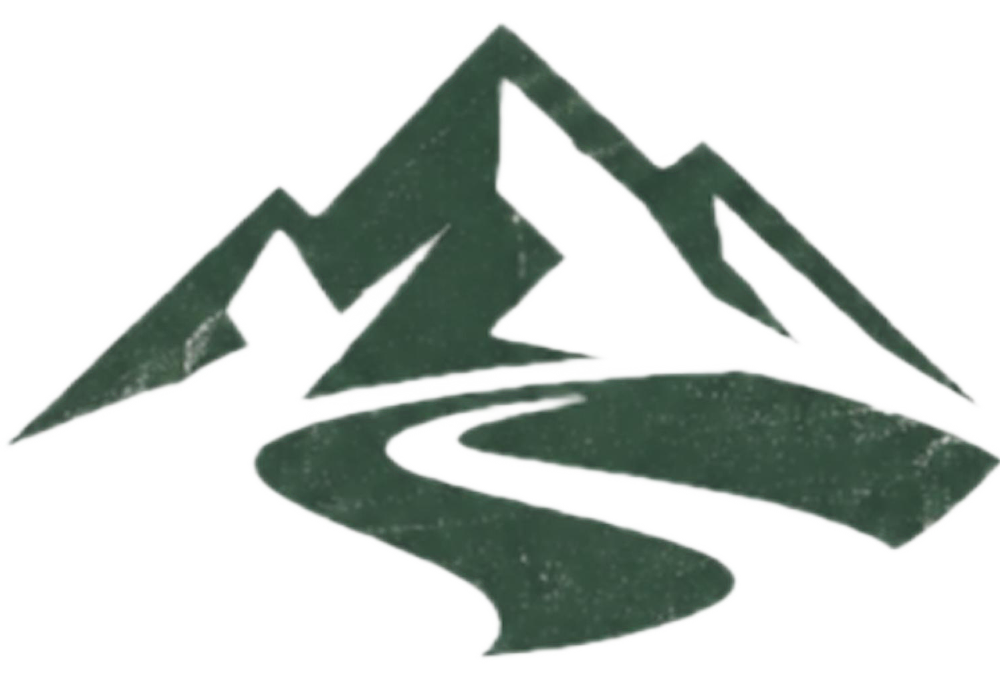



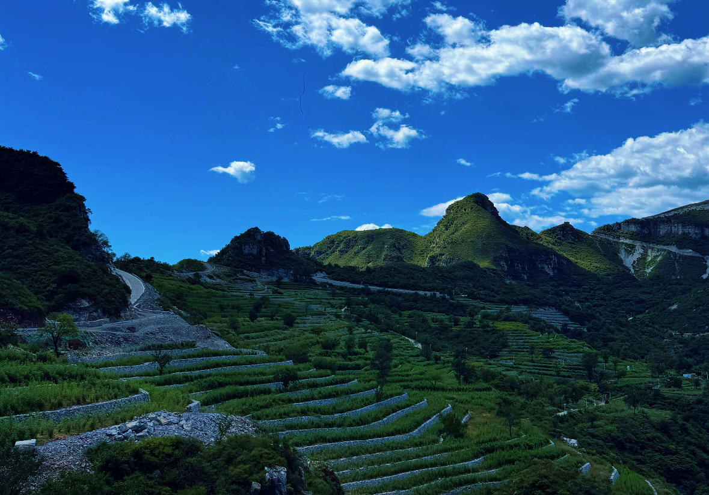
Shangfang Mountain Terrain Path Planning Decision-Making System
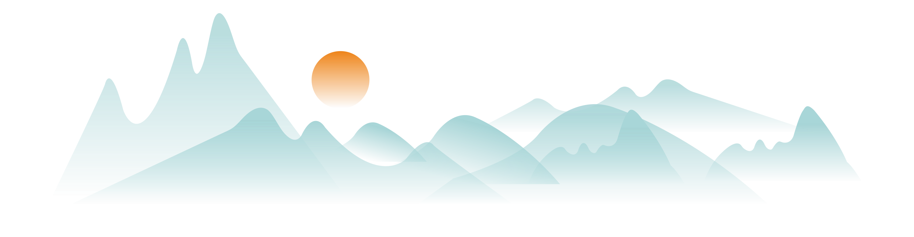
本项目以北京市房山区上方山国家森林公园为实证研究区，针对复杂喀斯特山地环境中传统低分辨率数据难以识别林下微地形、极端天气下应急撤离风险高等痛点，构建了一套微地形驱动的山地应急通行决策支持平台。
系统依托 0.3 m 高精度数字高程模型（DEM）与多源遥感影像，批量提取坡度、坡向、横坡、地表粗糙度、山体阴影与汇流累积量等多尺度微地形因子。通过野外 GNSS 点穴式核验与质量控制，深度结合地面实测数据修正模型误差，解决传统影像解译中道路与冲沟、阴影混淆的难题。平台聚焦山地野外活动的真实安全需求，打破单一最短路径局限，提供精细化的路径规划与决策服务。系统集成了标准化空间数据库、多情景最低成本路径算法与交互式三维可视化场景，致力于为山地实习师生、户外活动人员及景区管理人员提供直观、精准、可解释的空间应急决策支持。
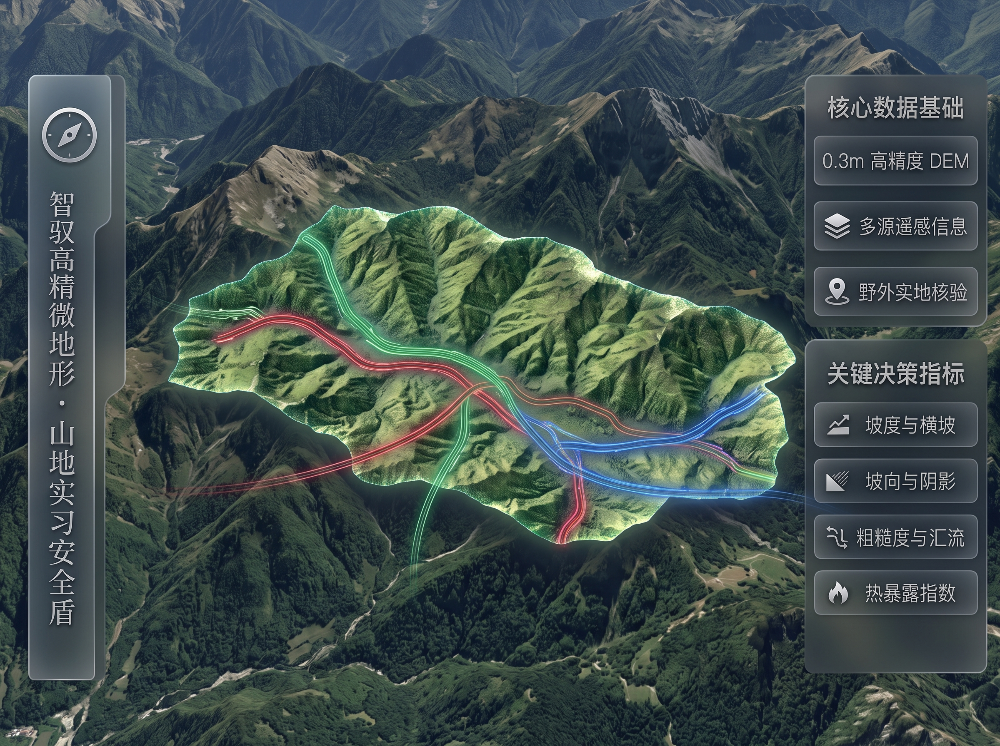
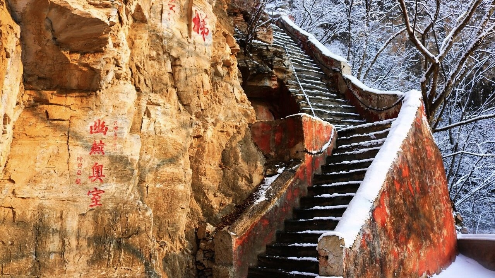

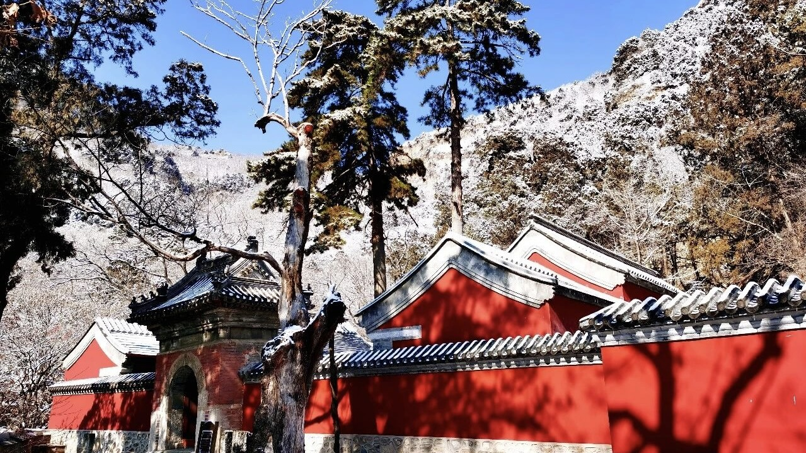
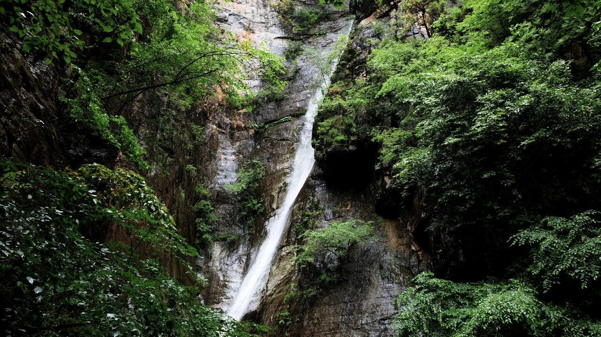
上方山是2012年公布的中国北方喀斯特地貌遗产的重要组成部分。公园内的峰、谷、洞、坑、崖、崮等地质遗迹资源类型丰富，石钟乳、石笋、石幔、石柱、石花等沉积物类型齐全。第二厅的石笋，高38米，在世界溶洞景观中堪称奇观。
上方山森林属原始天然林，森林覆盖率95%以上，有植物110 科、316属，652种，其中有国家重点保护植物10种，有北京市重点保护植物21种，有独有特有植物23种，有古树18种万余株。有陆生野生动物149种，国家级重点保护动物18种，北京市级重点保护动物80种。
上方山自古是历史文化名山。有寺、庵、碑、塔、摩崖石刻、名人诗词题字等200 余处。目前完好的寺庵有兜率寺、华严洞、藏经阁等26 处，有寺庵遗址药师殿、普贤殿等18 处。历史上珍藏的两套大藏经、明刻四十二章经、当代华严祖师肉身舍利，称为上方山“佛界三珍”。
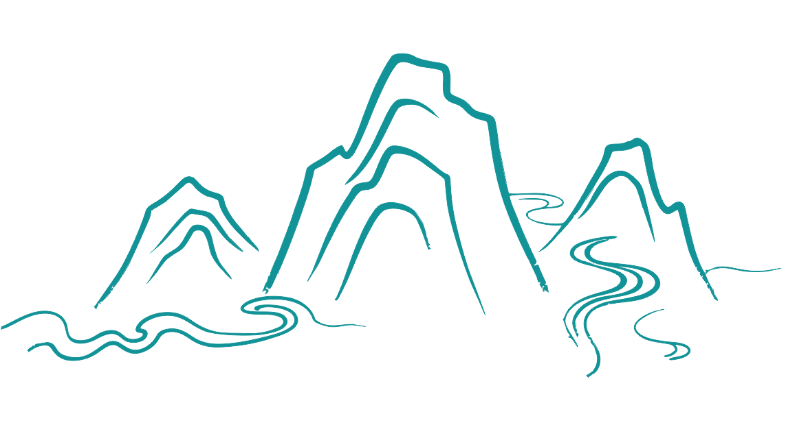
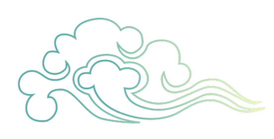
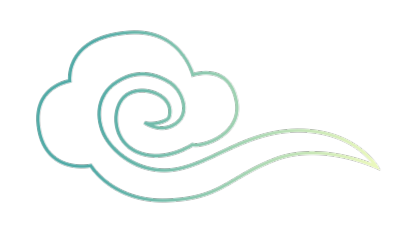
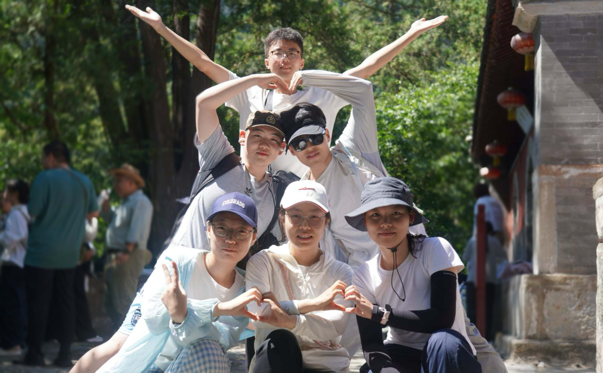
负责道路识别深度学习模型的构建、样本集标注、权重训练以及模型推理后处理优化。
负责上方山空间矢量数据拓扑处理、数字高程模型（DEM）分析以及三维场景底图集成。
负责交互式 Web 系统的界面开发、数据接口部署及识别成果的动态流式渲染。